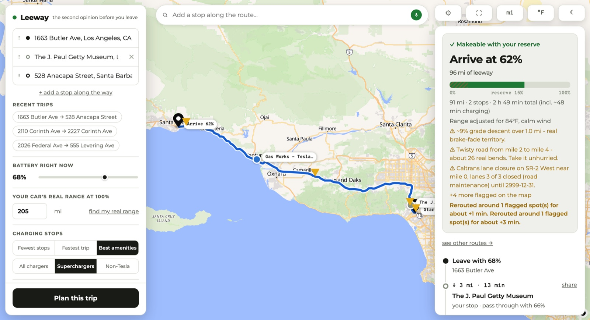
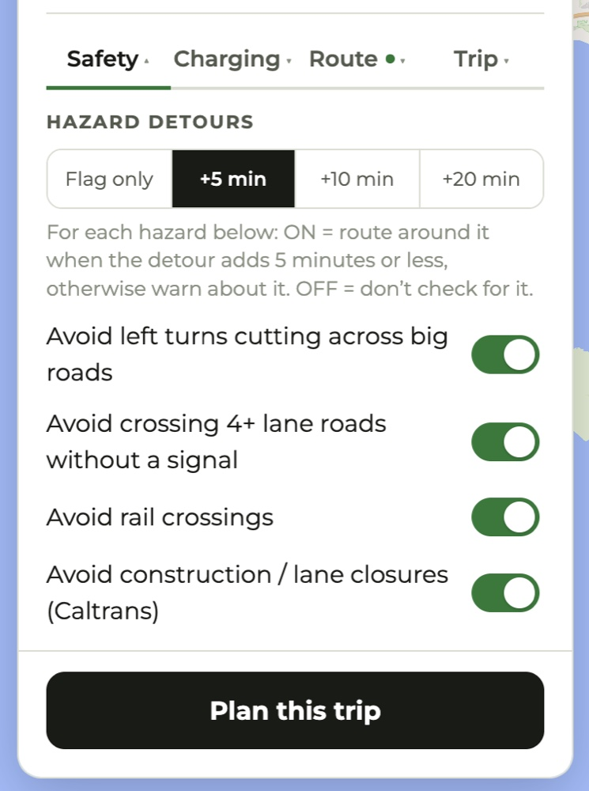
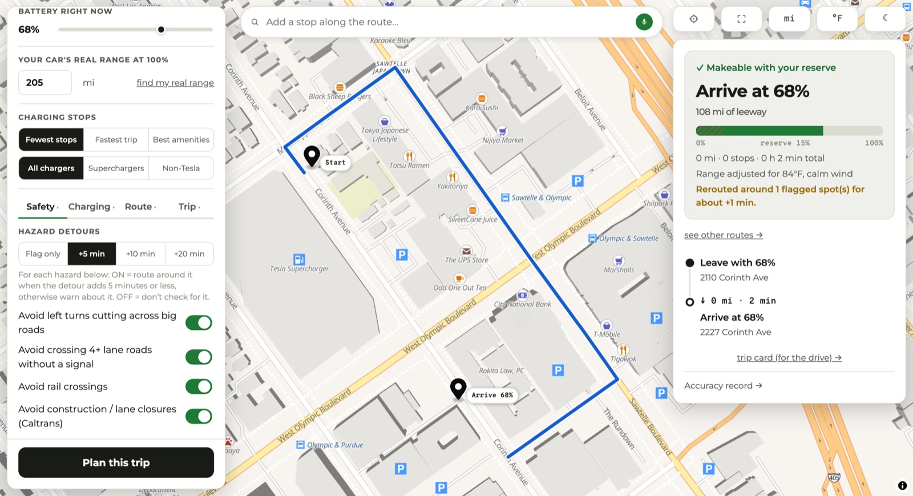
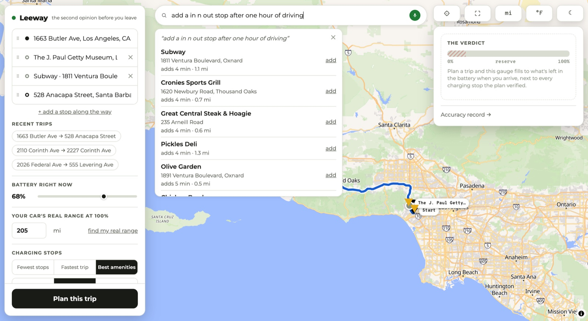
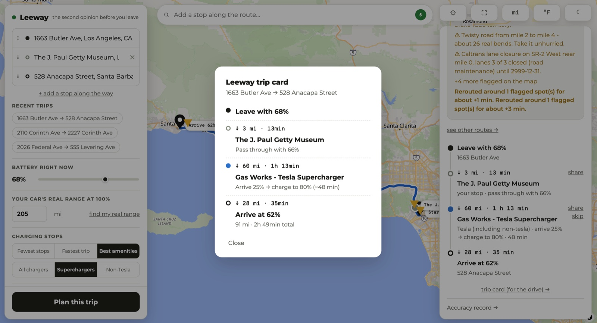
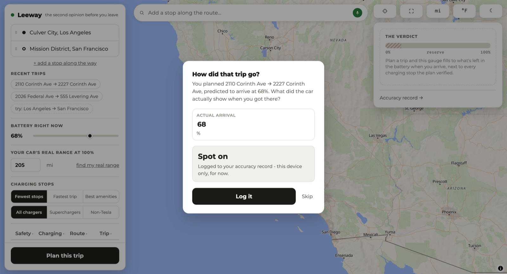

That is the whole product: one number you can trust, and
the margin left under it. Every charging stop in this plan was checked with
a real routing call before the plan accepted it, and the range math already
knows about the climb, the temperature, the headwind, and the three
suitcases in the back.
A 2021 Model 3 Standard Range Plus left the factory rated at 263 miles.
Five years later, that same car does 205. Batteries lose
capacity, and the loss is real, permanent, and different for every car.
Every other planner still quietly plans for 263, then hands you a route with
a charging stop you might not reach. Leeway starts from the opposite end:
you tell it what your car actually does at 100%, and it tells you what will
actually be left when you get there.
It is called Leeway because that margin is the answer. Not "you'll make it" —
how much room you have when you do.
↓ main screen
Ask on the left, get the verdict on the right
Start and destination, your battery right now, your car's real range at 100%.
That is everything the planner needs. The panel on the right stays empty until
you plan, then fills with the arrival number, the gauge, and the stop-by-stop
itinerary.
The planning panel, the map, and the verdict card waiting to be filled.
↓ a real plan
Every stop verified, every warning earned
Los Angeles to Santa Barbara by way of the Getty. Leeway returns
"Makeable with your reserve", an arrival of 62% with 96 miles
of leeway, and the full breakdown: 91 miles, two stops, 2 h 49 min including
about 48 minutes of charging, with range adjusted for 84°F and calm wind.
Underneath, the warnings it actually found on this route — a 9% grade descent
over a mile, a twisty section with about 26 real bends, a Caltrans lane closure
on SR-2 — and a note that it already rerouted around two flagged spots for a
combined four minutes.

Arrive at 62% · 96 mi of leeway · warnings the route actually contains.
↓ safety
It doesn't just warn you. It can route around it.
Four hazards, each its own switch: left turns cutting across big roads,
crossing 4+ lane roads without a signal, rail crossings, and active Caltrans
construction. Then the part that matters — a
detour budget. At +5 minutes, Leeway routes around any
flagged spot when the detour costs five minutes or less, and only warns you
when it would cost more.
That +5 is the default, not flag-only. Someone who never opens the
options still gets routed around the hazards that are cheap to avoid.
Below is what that looks like at its smallest and clearest: a two-minute
neighborhood hop that would normally cross West Olympic Boulevard without a
signal. With the switch on, the route takes the long way around the block
instead, and says so: rerouted around 1 flagged spot for about
+1 min.

Flag only, or spend 5, 10, or 20 minutes avoiding it.

The detour, in practice: around the block, not across the boulevard.
For each hazard below: ON = route around it when the detour adds 5 minutes
or less, otherwise warn about it. OFF = don't check for it.
Leeway, explaining itself
↓ four tabs
Opinionated defaults, and a switch for every one of them
Everything is tunable, nothing needs tuning. The defaults are already the
cautious answer, and each control says plainly what it does and what it costs
you.
Route — stops along the way, tolls, highways, ferries.Trip — passengers, luggage, departure time, break rhythm, manual temperature.
80% is the fast-charging sweet spot — above it, charging slows a lot.
No plan will ever count on dipping below this. Lower is braver, not smarter.
Beyond the driver. A full car costs a few percent of range, not a scare number.
Three of the helper lines, verbatim
↓ finding a stop
Say what you want, in the words you'd use
Type or speak into the bar above the map. "Add an In-N-Out stop after one
hour of driving." Leeway reads the sentence, including the budget hidden
inside it — "won't add much time" means five minutes, "I don't mind a longer
detour" means twenty — then searches real map data along the route.
The number next to each result is the honest one. "adds 4 min"
is a real routed detour: Leeway routes you to that door and back out to your
destination, and subtracts the trip you were already making. Results are
ordered by what they cost you. If nothing fits your budget it says so rather
than quietly widening it.
Tap add and it becomes a real waypoint in the route list, which you can drag to
reorder or drop entirely.

Each result priced in the only currency that matters: added minutes.
↓ for the road
A card for the drive, and a question when you're back
The trip card strips the plan down to what you need at a glance behind the
wheel: leave with 68%, the Getty at 3 miles, the Supercharger at 60 miles where
you arrive at 25% and charge to 80%, then 28 miles to arrive at 62%. No map, no
controls, and no scrolling — it is built to be screenshotted and to survive the
drive on a phone, because your car's screen can't open the web app.
Any individual stop can also be shared out as a maps link, which the Tesla app
and most navigation apps will accept.
Then the honest part. Next time you open Leeway it asks
how the trip actually went, and compares what really happened
to what it promised.

The trip card, sized for a glance.

"How did that trip go?" — and this one was spot on.
Those answers are not just a scoreboard. Once you've logged a few substantial
trips, Leeway starts correcting its own estimates toward what your car really
does — weighted toward recent drives, and deliberately biased to the safe side.
A car that turns out hungrier than predicted gets the full correction; one that
does better than predicted only gets half of it, and never enough to make the
plan braver than stock. The plan tells you out loud when that correction is
running.
This is the thread running through the whole app. The sample trips on the home
screen are labeled "try:" so they can't be mistaken for your
own history. When the routing quota runs out, the verdict says planning
couldn't run, rather than echoing your starting battery back at you as though
it were an answer. When a search fails, it says the search failed — it never
says "no matches" and send you hunting for a typo.
A suggestion pretending to be your history would be a small lie, and this
product doesn't do those.
From the source, on why sample trips say "try:"
↓ the rest of it
Small things, done properly
Find my real range
Don't know your car's true 100% range? Copy the two numbers off the car's screen — battery % and the range it's showing — and Leeway does the arithmetic. Each reading is dated, so the page also becomes a record of your pack's decline.
Dark mode
A real night theme with its own night basemap, not the day map dimmed. Road layers are repainted so they don't vanish into the dark ground at city zoom.
Miles or kilometres, °F or °C
Switched independently, right on the map. Pick one of each and the whole plan re-reads in your units.
Recent trips
Your last routes sit one tap away under the address fields, with sample trips there on your first visit.
Route alternatives
"See other routes" compares real corridors — I-5 against the 101 against the 99 — and replans along the one you pick.
Skip a stop
Don't like a charger it chose? Skip it, and the whole plan is rebuilt around the ones you'll actually use.
Stops by hand
Click the map to drop a waypoint anywhere. Drag any point past any other to reorder — including the start and the destination. Three stops maximum, on purpose: past that you're planning a tour, not a drive.
Charger detail on the pin
Hover a stop for its network, peak kW, stall count, price if it's known, a photo if there is one, and a link straight out to Google Maps.
Readable at a glance
Superchargers are blue circles, other fast chargers orange diamonds, your own stops gray, hazards amber triangles pointing at the spot. Names stay pinned beside each marker.
Exact house numbers
When the usual geocoder only finds the street, Leeway falls back to the US Census one that can place the number.
Departure time
Set when you're leaving and the weather becomes that hour's forecast, sun glare computes for then, and closures filter to what will still be active.
Break rhythm
"Break at least every 2h35" plans stops for the driver, not the battery, when the driver is what runs out first.
Accuracy record
Every predicted-versus-actual trip you log, side by side, with no favorable rounding. Leeway shows you its own misses.
Start from where you are
One tap sets your current location as the origin. It's used once, for that, and never stored.
No account, no tracking
No sign-up, no analytics, no ads. Your range, preferences and trip history live on your device and nowhere else.
↓ on your phone
Installs on the phone that's coming with you
Leeway is a progressive web app: open it in a phone browser and add it to your
home screen, and it launches full-screen with its own icon like any other app.
The layout is built for the narrow screen, not squeezed into it.
There's also a native iOS build — the same app in a Capacitor
shell — which adds the three things a website can't do. It schedules a local
reminder to log how your trip went once you should have arrived, it opens the
native share sheet so you can send a charging stop to your car's own app, and
it matches the status bar and safe areas to your theme.
Arrive · what it's built on
Real data, no guessing
Leeway is free, runs on free infrastructure, and has no business model. It
covers California for now.
Routing
OpenRouteService — geometry, duration, and the elevation profile the range math runs on
Chargers
Open Charge Map — network, connector types, stall counts, power, and cost
Weather
Open-Meteo — live conditions, or the hourly forecast for your departure up to 7 days out
Hazards
OpenStreetMap via Overpass — traffic signals, lane counts, and rail level crossings
Closures
Caltrans Lane Closure System — active statewide construction
Addresses
US Census geocoder, for the exact house numbers the primary geocoder misses
Stop search
Gemini, to turn a spoken sentence into a search Leeway can run
Built with
React, TypeScript and MapLibre GL on GitHub Pages; FastAPI on Render; Capacitor for iOS